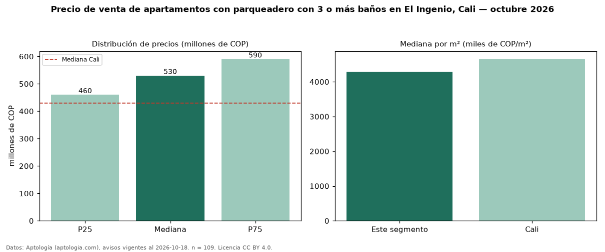

Precio de venta de apartamentos con parqueadero con 3 o más baños en El Ingenio, Cali — octubre 2026
Con 109 avisos vigentes, el precio mediano de apartamentos con parqueadero con 3 o más baños en venta en El Ingenio, Cali es COP 530 millones. Eso es 10 % más que la mediana de los apartamentos con parqueadero en venta de El Ingenio (COP 480 millones, n = 191); este segmento reúne el 57 % de esos avisos. Por metro cuadrado, la mediana es COP 4,28 millones/m² (n = 108), 3 % por debajo de los apartamentos con parqueadero en venta de El Ingenio (COP 4,43 millones/m²). El área mediana anunciada es 121 m². El segmento con más oferta es el de 3 o más habitaciones (104 avisos, mediana COP 530 millones). La administración mediana declarada es COP 650.000 al mes (n = 88). El estrato más frecuente es 5 (72 % de los avisos con estrato). La mediana de todos los apartamentos en venta de Cali es COP 430 millones (+23 % de diferencia). Datos: Aptología (aptologia.com), CC BY 4.0 — https://www.aptologia.com/venta/cali/el-ingenio. Archivos: PDF, CSV con las cifras y gráfica PNG.

| Avisos únicos | 109 |
|---|---|
| Percentil 25 | COP 460.000.000 |
| Mediana | COP 530.000.000 |
| Percentil 75 | COP 590.000.000 |
| Mediana por m² | COP 4.283.144 |
Fuente: avisos vigentes de portales inmobiliarios recopilados por Aptología, deduplicados (mínimo 30 avisos únicos por celda). Precios pedidos, no cerrados. Fecha: 2026-10-18.